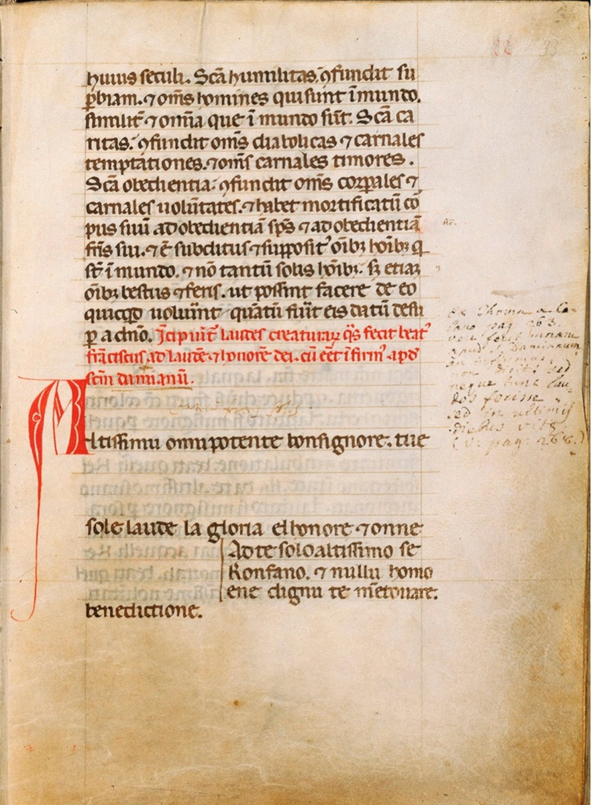

Francis and his Cantico del Sole:
Songs about Saint Francis and his exacly 800 year old Cantico del Sole from Italian manuscripts from the medieval and renaissance periods
Target audience:
Singing amateurs of every level
Date:
Saturday 20 September 2025 from 10 to 17. Location close to ’s-Hertogenbosch will be announced soon.
Costs:
160 Euro per person, study materials, jubilee lunch, coffee and tea included
Register:
Send an e-mail to Marsja (Click here). Register before September 1st, 2025.
Definition:
In 2025 it is exactly 800 years ago that Saint Francis finished his famous Cantico del Sole, the song that inspired the late pope Francis to call for more care for the Creation and for each other. Vocal ensemble Anime Beatitudinis Cantando developed a concert program with music around this Cantico del Sole and the life history of its maker. The repertoire amongst others consists of gregorian chant (the chant for the office of the feast of Saint Francis on the 4th of October) and Italian laude. Polyphonic music by Landini and Ciconia are also sung in this concert program called Sia Laudato, San Francesco! (click for more information).
In this workshop you as a singer will engage with a selection from this repertoire, giving you an opportunity to get to know this remarkable saint and his Cantico del Sole, and to get a glimpse of the way the ensemble works. Their interpretation is always fed by the earliest transmitted notation of the music, as well as by their vast experience and specialized performance practice of medieval repertoire.
You as a participant to this workshop do not need any knowledge of or experience with this repertoire. You are however expected to be fond of singing and to be prepared to prepare the course in advance. The music and lyrics will be sent at least two weeks in advance, adapted to your level of experience with singing in general and this repertoire specifically. Everyone will receive instructions on his or her level, but will be encouraged to sing together as well.